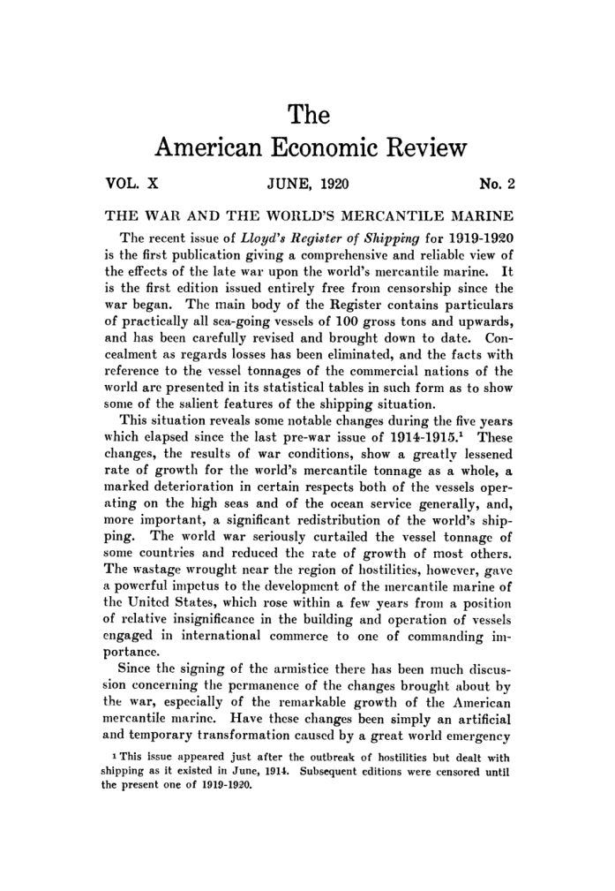

A frota que a guerra deu aos Estados Unidos e a conta de Keynes
Leitura: 16 min
Berglund mede a redistribuição da marinha mercante, Day resenha o livro de Keynes sobre a paz, Plehn analisa o imposto sobre lucros excessivos e Litman separa preço e volume no comércio exterior.


A edição de 1919–1920 do Lloyd's Register of Shipping foi a primeira, desde o início da guerra, publicada inteiramente sem censura. Abraham Berglund, de Washington, abre a American Economic Review de junho de 1920 com o que ela revela. Em junho de 1919, a marinha mercante mundial somava 29.255 navios de 100 toneladas brutas ou mais, com 50,9 milhões de toneladas brutas. O total quase não mudara em cinco anos. A distribuição, sim: a frota oceânica a vapor dos Estados Unidos crescera 382%, e a do Reino Unido encolhera 13,5%.
É uma edição de balanço do pós-guerra, e quase todos os artigos medem o que a guerra deixou. Além de Berglund, Alzada Comstock, do Mount Holyoke College, compara a arrecadação dos impostos estaduais sobre a renda; Earl A. Saliers, da Yale University, discute o lugar das reservas de depreciação no valor justo das concessionárias; Carl C. Plehn examina o imposto sobre lucros de guerra e lucros excessivos; Clive Day, também de Yale, resenha The Economic Consequences of the Peace, de John Maynard Keynes; e Simon Litman, da University of Illinois, separa preço e quantidade na década do comércio exterior americano. Seguem-se resenhas, listas de livros novos, documentos, periódicos e notas.
A guerra redistribuiu a marinha mercante do mundo?
Abraham Berglund (Washington, D. C.) · “The War and the World's Mercantile Marine” · pp. 227–258
Abraham Berglund compara as tabelas do Lloyd's Register de junho de 1914 e de junho de 1919. A tonelagem mundial a vapor cresceu cerca de 2,5 milhões de toneladas brutas, ou 5,5% em cinco anos, enquanto a de veleiros caiu mais de 1 milhão. A mudança estava na distribuição. O Reino Unido perdeu 2.547.000 toneladas brutas a vapor; a Alemanha, 1.888.000, ou 36,8%; o Japão passou do sexto para o quarto lugar. A frota oceânica dos Estados Unidos ganhou 7.746.000 toneladas.
Berglund cita uma estimativa do Board of Trade Journal sobre quanto cada frota teria crescido sem a guerra. Por ela, o mundo perdeu 7.473.000 toneladas brutas a vapor; as frotas estrangeiras perderam cerca de 14,2 milhões, compensadas em parte pelo ganho líquido americano de 6.729.000. A conta não inclui a deterioração. Navios que seriam desmanchados continuaram no mar, navios especializados foram desviados de suas rotas, e o serviço britânico para a Australásia caiu de 24 ou 25 vapores por mês em 1914 para 5 em outubro de 1918.
A segunda parte pergunta se a posição americana é duradoura. Antes da guerra, só 1.076.152 toneladas brutas americanas operavam no comércio exterior, e em 1914 navios americanos levavam 11,4% das importações e 8,3% das exportações por mar. O autor examina o custo de construção, o combustível, a mão de obra e o equilíbrio entre as cargas de ida e de volta. Em 1919, o aço naval custava menos nos Estados Unidos que na Inglaterra; o óleo combustível reduzia tripulações e a dependência das carvoarias britânicas; e os salários pesavam menos no custo total do que se supunha. A dificuldade estava na falta de experiência marítima de um país voltado havia duas gerações para atividades em terra. Berglund conclui que a nova posição está de acordo com as tendências econômicas e pede uma política protetora e reguladora, seja a frota de propriedade pública ou privada.
Quanto rende um imposto estadual sobre a renda?
Alzada Comstock (Mount Holyoke College) · “Fiscal Aspects of State Income Taxes” · pp. 259–271
Alzada Comstock usa as estatísticas federais de renda de 1917 para medir a capacidade tributária de cada estado. Nova York, Pensilvânia, Illinois, Massachusetts e Ohio pagaram exatamente dois terços do imposto federal sobre a renda das pessoas físicas e 63% do imposto sobre as empresas. Dos doze estados com lei de imposto de renda, só Nova York e Massachusetts estão entre os ricos; os outros dez têm desenvolvimento industrial moderado ou pequeno. A autora compara o que cada estado arrecada com o que a União arrecada nele, o peso do tributo na receita estadual e o custo de cobrança.
Wisconsin, pioneiro em 1911, arrecadou US$ 1.631.413 em 1912 e US$ 6.951.483 em 1918, mais de três quartos sobre lucros de empresas. Entre 1912 e 1917, a arrecadação do imposto sobre a propriedade cresceu 47%, e a do imposto de renda, 172%. A comissão tributária do estado chamou os anos de 1917 e 1918 de anormais, mas julgou o resultado satisfatório.
Os fracassos têm causa comum. Mississippi cobra 0,5% sobre rendas acima de US$ 2.500 e arrecadou US$ 31.123 no ano encerrado em setembro de 1918, enquanto a União tirava mais de US$ 2 milhões das pessoas físicas do estado. A primeira lei de Oklahoma rendeu US$ 2.816 em 1909; só a revisão de 1915 elevou a receita para mais de US$ 400 mil em 1916. A Carolina do Sul revogou a sua em 1918, depois de deixá-la nas mãos dos avaliadores locais. O comitê legislativo do Mississippi resumiu o diagnóstico em 1918.
“Seu sucesso ou fracasso é exclusivamente uma questão de administração.” (“Its success or failure is solely a matter of administration.”)
Entre as leis de 1919, a de Nova York, estado que pagou 37% do imposto federal sobre pessoas físicas, deve render US$ 45 milhões com alíquotas de 1% a 3%; a de Dakota do Norte chega a 10% sobre rendas do trabalho acima de US$ 40 mil. A conclusão de Comstock é que o êxito é possível, mas depende de ajustar as alíquotas aos tipos de renda de cada estado e de uma administração especializada e centralizada. O custo de cobrança conhecido vai de pouco mais de 1% do lançamento em Wisconsin a quase 4% na Virgínia.
A reserva de depreciação faz parte do valor justo?
Earl A. Saliers (Yale University) · “Cost, Fair Value, and Depreciation Reserves” · pp. 272–282
Desde Smyth v. Ames, de 1898, a Suprema Corte manda fixar as tarifas dos serviços públicos com base no valor justo da propriedade, e não no investimento efetivo. Earl A. Saliers nota que a escolha separou a regulação dos registros contábeis, que partem do custo. A maior parte das concessionárias não tem reservas de depreciação, sob o argumento de que reparos equivalem a depreciação, ou as tem insuficientes; alguns administradores temem que a reserva seja usada para reduzir o valor justo numa avaliação. Para o autor, reparos não equivalem a depreciação, e a reserva é uma das melhores proteções contra a insolvência.
A contabilidade ignora as flutuações de preço. Uma máquina instalada em 1910 por US$ 1.000, com vida útil de dez anos, é baixada por US$ 1.000 menos o valor residual, ainda que substituí-la em 1920 custe US$ 1.500; os US$ 500 a mais são investimento novo. Com preços em alta, o investidor perde; com preços em queda, ganha. Como esse risco é de todo capital, Saliers sustenta que o valor justo não deve compensar a perda nem tomar o ganho.
A conclusão segue do exemplo. A reserva é uma conta de avaliação que compensa a depreciação acumulada não deduzida do ativo; não é lucro acumulado nem propriedade do público, como alguns afirmam. A empresa deve ter retorno sobre o custo da planta original, que continua a servir com a mesma eficiência, mas não sobre a reserva, porque isso equivaleria a capitalizá-la. Se a depreciação acumulada for deduzida do custo, então as ampliações pagas com a reserva devem entrar no valor justo.
Saliers trata ainda de três casos. Se a receita não bastou para formar a reserva, deduzir a depreciação esgota o investimento, e a perda só não deve ser capitalizada se vier de má gestão. Se a depreciação foi ganha mas distribuída aos acionistas, deve ser deduzida, ou a empresa capitalizaria o que já devolveu. Se a reserva serviu para amortizar capital, também deve ser deduzida.
O imposto sobre lucros excessivos tributa o lucro ou a inflação?
Carl C. Plehn (Columbia University) · “War Profits and Excess Profits Taxes” · pp. 283–298
Carl C. Plehn trata o imposto sobre lucros excessivos como um tributo novo: pela primeira vez, uma lei separa como base tributável um lucro tido por anormal, acima de um lucro normal presumido. As analogias com o imposto sobre heranças, a contribuição de melhoria ou o imposto sobre a valorização da terra vão pouco longe. O tributo nasceu em 1915, na Dinamarca e na Suécia, sobre os comerciantes que abasteciam a Alemanha, e em março de 1917 J. C. Stamp já contava treze países que o adotavam. Como imposto de paz, diz Plehn, é difícil de defender; como imposto de guerra, tem méritos de conveniência: arrecada e recolhe parte dos ganhos da inflação.
O autor descreve as formas finais. Na Grã-Bretanha, em 1918, a alíquota era de 80% sobre o excesso em relação a um padrão de lucros de antes da guerra, com retorno legal de 6% para companhias. Nos Estados Unidos, a lei de 1918 cobrava das empresas 30% sobre o lucro acima de um crédito de 8% do capital mais US$ 3.000, até 20% do capital, e 65% acima disso, com uma terceira faixa de lucros de guerra a 80%. No exemplo numérico de Plehn, uma empresa com capital de US$ 100 mil e lucro de US$ 40 mil paga US$ 17.600.
A dificuldade central é o capital investido. Seu valor depende dos lucros, mas a lei precisa fixá-lo independentemente deles para calcular o lucro normal.
“É preciso fixar a sombra na ausência do corpo que a projeta.” (“one has to fix the shadow in the absence of the body which casts the shadow”)
Plehn conclui que o tributo incide sobre uma excessividade presumida, e não só sobre a especulação do período inflacionário. Parte dele é repassada aos preços, e a mortalidade de empresas foi notavelmente baixa enquanto vigorou. O anúncio, na lei de 1918, de alíquotas menores para os anos seguintes levou madeireiras, petroleiras e donos de estoques de couro a adiar a produção, quando a reconstrução pedia o contrário. O artigo termina com o relatório de dezembro de 1919 do secretário do Tesouro, Carter Glass, contra o imposto em tempos de paz.
A Alemanha pode pagar o que o tratado lhe cobra?
Clive Day (Yale University) · “Keynes' Economic Consequences of the Peace” · pp. 299–312
Clive Day resenha The Economic Consequences of the Peace, de John Maynard Keynes, que fora o principal representante do Tesouro britânico na Conferência de Paz e renunciara aos cargos quando perdeu a esperança de mudar os termos. Publicado nos Estados Unidos na última semana de janeiro, o livro tinha, segundo uma circular do editor de 8 de março, esgotado a primeira tiragem de 20 mil exemplares. Day separa duas partes. Os três primeiros capítulos, com os retratos de Clemenceau, Lloyd George e Wilson, são para ele teatrais, e o livro, um panfleto político. O corpo, sobre o tratado e as reparações, é sóbrio e digno de confiança.
Day aceita os dois pontos principais de Keynes: os termos podem representar uma quebra da palavra empenhada antes do armistício, e as reparações podem estar muito além da capacidade alemã. O tratado não fixou uma soma; incluiu, no Anexo I, pensões e auxílios de separação. Keynes estima em US$ 10,6 bilhões os danos em sentido estrito e em US$ 25 bilhões as pensões e auxílios.
Day critica detalhes do cálculo: Keynes dá a Alta Silésia por perdida e não credita a redução das importações que acompanharia a cessão de território. Mas lembra que a capacidade de pagamento dependerá mais de fatores sociais e políticos que de estatísticas de antes da guerra. Sobre os remédios, apoia a fixação de uma soma definida, que os representantes americanos defenderam na conferência; duvida que os americanos aceitem, nas condições presentes, cancelar as dívidas entre aliados, o que custaria US$ 10 bilhões aos Estados Unidos; e acha a união de livre comércio sob a Liga das Nações economicamente benéfica, mas contrária ao desejo dos novos estados de ter política própria.
A parte final contesta a história da conferência. Keynes ignora os acordos territoriais, trabalho construtivo de primeira grandeza, e atribui o tratado a três chefes de governo, quando as comissões fixavam os limites de cada acordo. Day, que trabalhou na área territorial, conclui que nenhum homem poderia ter conciliado os interesses em conflito.
Quanto do salto das exportações era só preço?
Simon Litman (University of Illinois) · “The Past Decade of the Foreign Commerce of the United States” · pp. 313–331
Simon Litman parte das cifras oficiais. As exportações americanas passaram de US$ 1,74 bilhão no ano fiscal de 1910 para US$ 7,23 bilhões em 1919. De 1910 a 1914, subiram 33%, e as importações, 18%; de 1914 a 1919, 205,6% e 63,4%. Para o autor, as estatísticas em valor já eram enganosas antes da guerra e passaram a sê-lo inteiramente depois dela: o índice de preços por atacado do Bureau of Labor americano subiu de 100 em 1913 para 203 no primeiro semestre de 1919.
Litman reúne estimativas de volume. J. J. MacFarlane atribui 70% do aumento do comércio entre 1914 e 1919 aos preços; o índice de quantidade das exportações calculado por Berridge para o Harvard University Committee on Economic Research dá 140 em 1919, com base 100 em 1911–1914. O autor faz o próprio cálculo, multiplicando as quantidades de cada ano pelo preço unitário de 1910. No algodão em rama, a alta de preços responde por 56,3% do valor de 1919; em treze manufaturas selecionadas, o aumento seria de 46%, e não de 228%.
A queda das exportações de 1918, segundo O. P. Austin, foi em parte aparente: mercadorias embarcadas em navios sob controle do governo não entravam nos registros, e as compras dos aliados registradas naquele ano ficaram US$ 1,238 bilhão abaixo dos empréstimos americanos feitos para esse fim. Litman nota também o comércio direto pelo Pacífico e a tentativa britânica de recuperar o papel de intermediária: a costa do Pacífico recebeu 20,95% das importações em 1918 e 15,92% em 1919.
A conclusão é que o comércio da guerra foi um caso patológico, e não uma conquista normal de mercados. A produção de 1918 superou a de 1913 em só 13%, e a de 1919 em 8%, enquanto a moeda em circulação subiu 68% e os depósitos bancários 103%. O saldo exportador de US$ 13,96 bilhões em cinco anos, financiado por empréstimos públicos de longo prazo, e não por crédito mercantil, seria transitório; fora da Europa, os mercados ficariam com quem produzisse com mais eficiência.
O que mais há na edição?
As resenhas tratam de Introduction to Economics, de John Roscoe Turner, por Harvey A. Wooster; American Negro Slavery, de Ulrich B. Phillips, por Tipton R. Snavely; Trade and Navigation between Spain and the Indies in the Time of the Hapsburgs, de Clarence Henry Haring, por James Alexander Robertson; o relatório do comitê do Gabinete de Guerra britânico sobre as mulheres na indústria, por Edith Abbott; e os volumes de 1920 de Robert H. Montgomery sobre o procedimento do imposto de renda e do imposto sobre lucros excessivos, por Carl C. Plehn. Seguem-se as listas de livros novos, os documentos oficiais, os resumos de periódicos e as notas, que registram a adesão da American Economic Association ao American Council of Learned Societies.
Na minha leitura
Na minha leitura, a edição é sobre medir com uma régua que muda de tamanho. Litman mostra que as exportações de 1919 em dólares diziam mais sobre preços que sobre mercadorias embarcadas; Plehn mostra uma mercearia sem nenhuma mudança real pagando imposto sobre lucros excessivos porque a moeda passara a valer metade; Saliers aceita que a contabilidade a custo histórico fique atrás dos preços de reposição e argumenta que esse risco cabe ao investidor, e não à tarifa.
Day e Berglund levam a mesma pergunta a escalas maiores. Quanto a Alemanha pode pagar depende de premissas sobre a produção futura que as estatísticas de antes da guerra não respondem; se a frota americana é duradoura depende de custos relativos de construção e operação, e não da tonelagem acumulada às pressas. Nos dois casos, o trabalho do economista é separar o que mudou de fato do que mudou só na unidade de medida ou por força da emergência.
Glossário
- Tonelagem bruta
- medida do espaço interno de um navio, em unidades de 100 pés cúbicos.
- Tonelagem de porte bruto (dead-weight)
- peso, em toneladas de 2.240 libras, de carga, provisões e carvão que um navio pode levar.
- Tonelagem registrada
- nos Estados Unidos, a frota matriculada para o comércio exterior, distinta da destinada ao comércio interno.
- Tráfego equilibrado
- volume de carga semelhante nas viagens de ida e de volta de uma rota.
- Valor justo (fair value)
- base da propriedade sobre a qual tribunais e comissões calculam o retorno permitido às concessionárias.
- Reserva de depreciação
- conta que acumula as parcelas do custo de ativos que se desgastam, lançadas como despesa ao longo da vida útil.
- Depreciação normal
- nível em que a reserva se estabiliza porque as baixas de ativos igualam as novas provisões.
- Imposto sobre lucros excessivos
- tributo sobre o lucro acima de um retorno considerado normal sobre o capital investido.
- Capital investido
- na lei americana, o montante aportado pelos acionistas, em dinheiro, bens ou lucros retidos.
- Reparações
- pagamentos exigidos da Alemanha pelo tratado de paz por danos e custos de guerra.
- Valor presente
- valor hoje de uma sequência de pagamentos futuros, descontados a uma taxa de juros.
- Reexportação
- venda ao exterior de mercadoria importada, sem transformação no país.
Artigos (6)
- The War and the World's Mercantile Marine — Abraham Berglund (Washington, D. C.) (pp. 227–258) · resenha acima · comentário completo · JSTOR
- Fiscal Aspects of State Income Taxes — Alzada Comstock (Mount Holyoke College) (pp. 259–271) · resenha acima · JSTOR
- Cost, Fair Value, and Depreciation Reserves — Earl A. Saliers (Yale University) (pp. 272–282) · resenha acima · JSTOR
- War Profits and Excess Profits Taxes — Carl C. Plehn (Columbia University) (pp. 283–298) · resenha acima · JSTOR
- Keynes' Economic Consequences of the Peace — Clive Day (Yale University) (pp. 299–312) · resenha acima · comentário completo · JSTOR
- The Past Decade of the Foreign Commerce of the United States — Simon Litman (University of Illinois) (pp. 313–331) · resenha acima · JSTOR
Resenhas (6)
- John Roscoe Turner, Introduction to Economics — Harvey A. Wooster (pp. 332–334). Resenha de Harvey A. Wooster. JSTOR
- Ulrich B. Phillips, American Negro Slavery — Tipton R. Snavely (pp. 336–338). Resenha de Tipton R. Snavely. JSTOR
- Clarence Henry Haring, Trade and Navigation between Spain and the Indies in the Time of the Hapsburgs — James Alexander Robertson (pp. 338–341). Resenha de James Alexander Robertson. JSTOR
- Manufacturing Industries (pp. 347). Lista de livros recentes sobre indústrias manufatureiras. JSTOR
- Report of the War Cabinet Committee on Women in Industry — Edith Abbott (pp. 358–362). Resenha de Edith Abbott. JSTOR
- Robert H. Montgomery, Income Tax Procedure, 1920; Excess Profits Tax Procedure, 1920 — Carl C. Plehn (pp. 372–376). Resenha de Carl C. Plehn. JSTOR
Novos livros (15)
- New Books (pp. 334–336). Lista de livros recentes de obras gerais, teoria e sua história, com notas breves. JSTOR
- New Books (pp. 341–344). Lista de livros recentes de história econômica e geografia, com notas breves. JSTOR
- New Books (pp. 344–347). Lista de livros recentes de agricultura, mineração, silvicultura e pesca, com notas breves. JSTOR
- New Books (pp. 347–350). Lista de livros recentes de transportes e comunicações, com notas breves. JSTOR
- New Books (pp. 351–353). Lista de livros recentes de comércio e crises comerciais, com notas breves. JSTOR
- New Books (pp. 353–357). Lista de livros recentes de contabilidade, métodos comerciais, investimentos e bolsas, com notas breves. JSTOR
- New Books (pp. 357–358). Lista de livros recentes sobre capital e organização capitalista, com notas breves. JSTOR
- New Books (pp. 363–367). Lista de livros recentes sobre trabalho e organizações de trabalhadores, com notas breves. JSTOR
- New Books (pp. 367–372). Lista de livros recentes sobre moeda, preços, crédito e bancos, com notas breves. JSTOR
- New Books (pp. 376–379). Lista de livros recentes de finanças públicas, tributação e tarifas, com notas breves. JSTOR
- New Books (pp. 379). Lista de livros recentes, com notas breves. JSTOR
- New Books (pp. 379–382). Lista de livros recentes sobre população, migração e problemas sociais, com notas breves. JSTOR
- New Books (pp. 383). Lista de livros recentes sobre seguros e pensões. JSTOR
- New Books (pp. 384–387). Lista de livros recentes sobre socialismo e cooperativas, com notas breves. JSTOR
- New Books (pp. 387–389). Lista de livros recentes de estatística e seus métodos, com notas breves. JSTOR
Documentos, periódicos e notas (3)
- Documents, Reports, and Legislation — redação e colaboradores (pp. 390–429). Resumos de documentos oficiais, a começar pelas publicações do Bureau of Foreign and Domestic Commerce sobre indústria e comércio. JSTOR
- Periodicals — redação e colaboradores (pp. 430–458). Resumos de artigos de periódicos americanos e estrangeiros, por área. JSTOR
- Notes — redação (pp. 459–466). Notas da associação e do meio acadêmico, a começar pela adesão ao American Council of Learned Societies. JSTOR
Fontes
- The War and the World's Mercantile Marine (pp. 227–258). JSTOR · Internet Archive (PDF)
- Fiscal Aspects of State Income Taxes (pp. 259–271). JSTOR · Internet Archive (PDF)
- Cost, Fair Value, and Depreciation Reserves (pp. 272–282). JSTOR · Internet Archive (PDF)
- War Profits and Excess Profits Taxes (pp. 283–298). JSTOR · Internet Archive (PDF)
- Keynes' Economic Consequences of the Peace (pp. 299–312). JSTOR · Internet Archive (PDF)
- The Past Decade of the Foreign Commerce of the United States (pp. 313–331). JSTOR · Internet Archive (PDF)
- [untitled] The American Economic Review, (1920-06-01), pages 332-334 (pp. 332–334). JSTOR · Internet Archive (PDF)
- New Books (pp. 334–336). JSTOR · Internet Archive (PDF)
- [untitled] The American Economic Review, (1920-06-01), pages 336-338 (pp. 336–338). JSTOR · Internet Archive (PDF)
- [untitled] The American Economic Review, (1920-06-01), pages 338-341 (pp. 338–341). JSTOR · Internet Archive (PDF)
- New Books (pp. 341–344). JSTOR · Internet Archive (PDF)
- New Books (pp. 344–347). JSTOR · Internet Archive (PDF)
- [untitled] The American Economic Review (1920-06-01), page 347 (pp. 347). JSTOR · Internet Archive (PDF)
- New Books (pp. 347–350). JSTOR · Internet Archive (PDF)
- New Books (pp. 351–353). JSTOR · Internet Archive (PDF)
- New Books (pp. 353–357). JSTOR · Internet Archive (PDF)
- New Books (pp. 357–358). JSTOR · Internet Archive (PDF)
- [untitled] The American Economic Review, (1920-06-01), pages 358-362 (pp. 358–362). JSTOR · Internet Archive (PDF)
- New Books (pp. 363–367). JSTOR · Internet Archive (PDF)
- New Books (pp. 367–372). JSTOR · Internet Archive (PDF)
- [untitled] The American Economic Review, (1920-06-01), pages 372-376 (pp. 372–376). JSTOR · Internet Archive (PDF)
- New Books (pp. 376–379). JSTOR · Internet Archive (PDF)
- New Books (pp. 379). JSTOR · Internet Archive (PDF)
- New Books (pp. 379–382). JSTOR · Internet Archive (PDF)
- New Books (pp. 383). JSTOR · Internet Archive (PDF)
- New Books (pp. 384–387). JSTOR · Internet Archive (PDF)
- New Books (pp. 387–389). JSTOR · Internet Archive (PDF)
- Documents, Reports, and Legislation (pp. 390–429). JSTOR · Internet Archive (PDF)
- Periodicals (pp. 430–458). JSTOR · Internet Archive (PDF)
- Notes (pp. 459–466). JSTOR · Internet Archive (PDF)
- Sumário da edição no JSTOR: The American Economic Review, vol. 10, nº 2.
Documento em domínio público (EUA, publicado antes de 1931), via JSTOR Early Journal Content e Internet Archive. Resumo e comentário do autor deste site, sem afiliação com a American Economic Association. Encontrou um erro? Escreva: a correção é publicada no próprio texto, com data.
← Nº 163 · Chicago, 1919: impostos de guerra, reparações e preços da paz